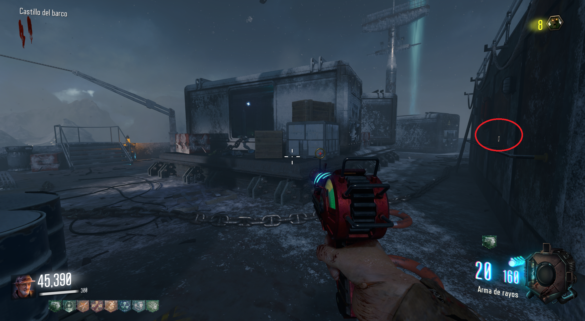
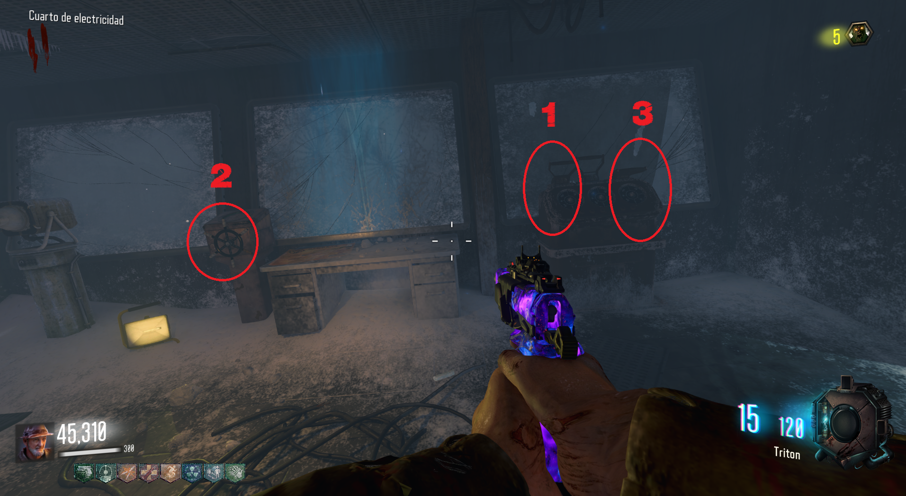
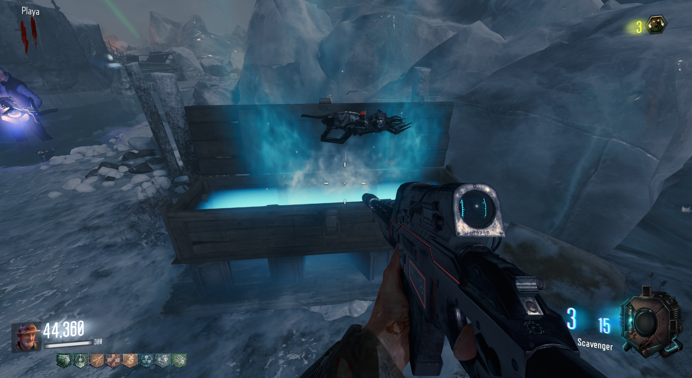

Easter Egg (Call of the Dead)
Requisitos:
VR-11, (arma especial).
Si somos más de un jugador habrá que hacer todos los pasos, pero si estamos en solo nos saltaremos alguno. (Se puede completar de las dos maneras)
El primer paso es ir al búnker y localizar la puerta donde están encerrados los Primis.
Tendremos que apuñalar la puerta hasta que los personajes dejen de hablar.
Cilindro:
Cuando esto ocurra, un cilindro aparecerá en la planta superior, tiene tres ubicaciones posibles.

Al lado de las escaleras que van al Jügger-Nog.
Transformadores:
Tras volver a acuchillar la puerta, se encenderán 4 transformadores en el mapa que tendremos que explotar con granadas.
Recomiendo comprar Sémtex.

Localizaciones de los transformadores:
Vodka. Solo para cooperativo. Si juegas en solo, ve al siguiente paso, el de las radios:
Deberemos encontrar una botella de Vodka.
Aquí las posibles localizaciones.

Donde el barco se parte a la mitad.

Por las escaleras que van al faro.

En la zona del barco donde electricidad, junto a una caja.

Saliendo del búnker, en las escaleras de encima.
Después, el jugador con la botella deberá de introducirla por el tubo a la izquierda de la puerta del búnker.

Volveremos a acuchillar la puerta.
Radios:
El siguiente paso será interactuar con 4 radios en el siguiente orden:
Luz verde:
Una vez hecho esto, tendremos que ir al cuarto de electricidad e interactuar con tres objetos un número determinado de veces. (Este paso se podía realizar desde cualquier momento anterior)

Si lo hemos hecho bien, la luz verde estará apuntando al faro.
Colores y números:
El siguiente paso es encontrar 4 papeles con un color y un número cada uno que deberemos anotar.
Dejo aquí una herramienta para recordarlos:
Localizaciones de los papeles:
Una vez apuntados los códigos, volveremos al faro y veremos que en cada planta habrá una rueda con un color y números a su alrededor.
Deberemos de poner el código correcto en cada planta.
Para no equivocarnos este es el orden que debemos seguir:
Primero el morado, después el amarillo y finalmente el azul. De esta manera el naranja se ajustará solo.
Sirenas. Solo para cooperativo. Si juegas en solo, ve al siguiente paso, el de la VR-11:
Deberemos de interactuar con 4 sirenas en un orden específico y en un tiempo limitado.
Lo mejor será que cada jugador se asigne una o dos sirenas.
Localizaciones de las sirenas:

1. En el camino del faro al Spawn, donde la AK-74u.

2. Cerca de la Speed Cola después del.

3. Bajo el faro, en la esquina del búnker .

4. Cerca de la Speed Cola antes de volver al mapa.
Para este paso ya necesitaremos la VR-11, que se obtiene de la caja.

Tendremos que ir a la planta más baja del faro y disparar a un zombie ahí con la VR-11.
Se convertirá en humano y empezará a ascender por la luz verde.
Tendremos que matarlo antes de que llegue a la cima. Si la hacemos bien, podremos obtener el dispositivo Vril en la parte baja.

Final:
Mandaremos el dispositivo por el tubo de la izquierda a la puerta del búnker y acuchillaremos esta puerta.
Escucharemos como los primis se intentan teletransportar y fallan.
Tendremos que acuchillar el fusible para que deje de soltar chispas y después la puerta otra vez.
La puerta se abrirá y habremos terminado el Easter Egg de Call of the Dead.